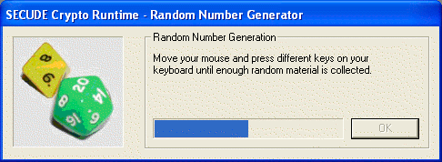

This pseudo random generator is based on the Secude SDK function "rndm". This is invoked for each random bit to be created.
Remark:
The Secude pseudo random generator is used at several places: to create new key pairs, to generate session keys or if you explicitly want to use the Secude pseudo random generator to create random data.
At the first call of the Secude pseudo random generator the entropy for the seed value (a random start value) is "collected": This collection is done via your keyboard input or via your mouse moves.
This means you see the dialog box of the entropy collector

only once per call of CrypTool.